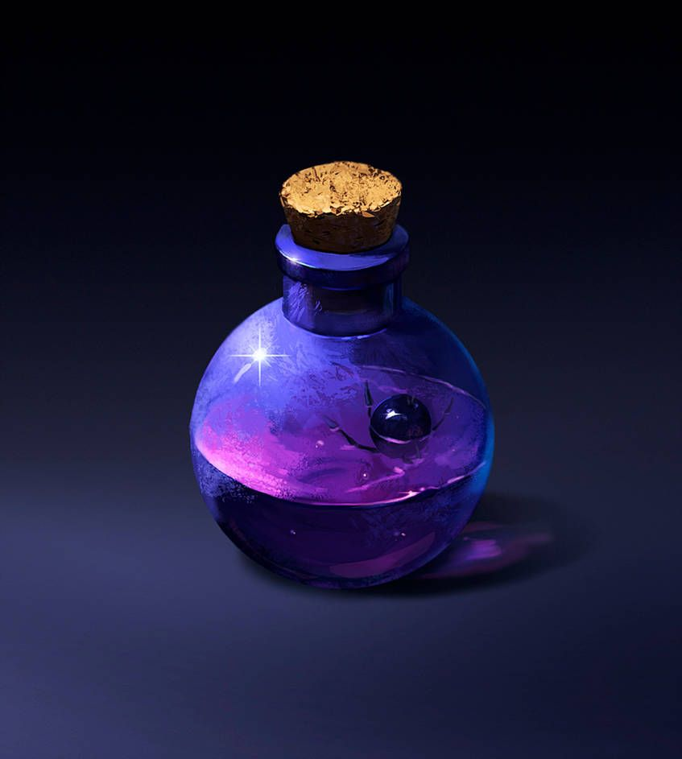

Homepage
Polymorph Potion recipe

Description
An almost clear, pale green potion with a constantly morphing projection of a creature floating within. Drinking this potion allows the drinker to use the Polymorph spell on themselves for 15 minutes without concentration.
Ingredients
- Rainbow Mushroom
- Dreamlilly
- Willowshade Fruit
- Chameleon Skin
- Toenail of target
Instructions
- Squeeze the juice from the Willowshade fruit
- Grind the Rainbow Mushroom into a fine powder
- Finely chop the Dreamlilly
- Mix the Willowshade fruit juice, Rainbow Mushroom, and chopped Dreamlilly
- Strain the mixture through the Chameleon skin
- Add the Toenail of the desired target
- Store in a sound proof container